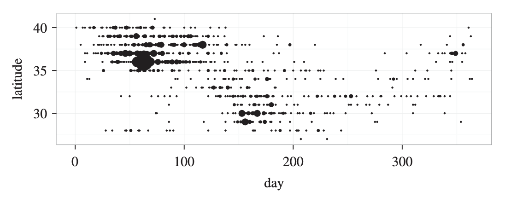
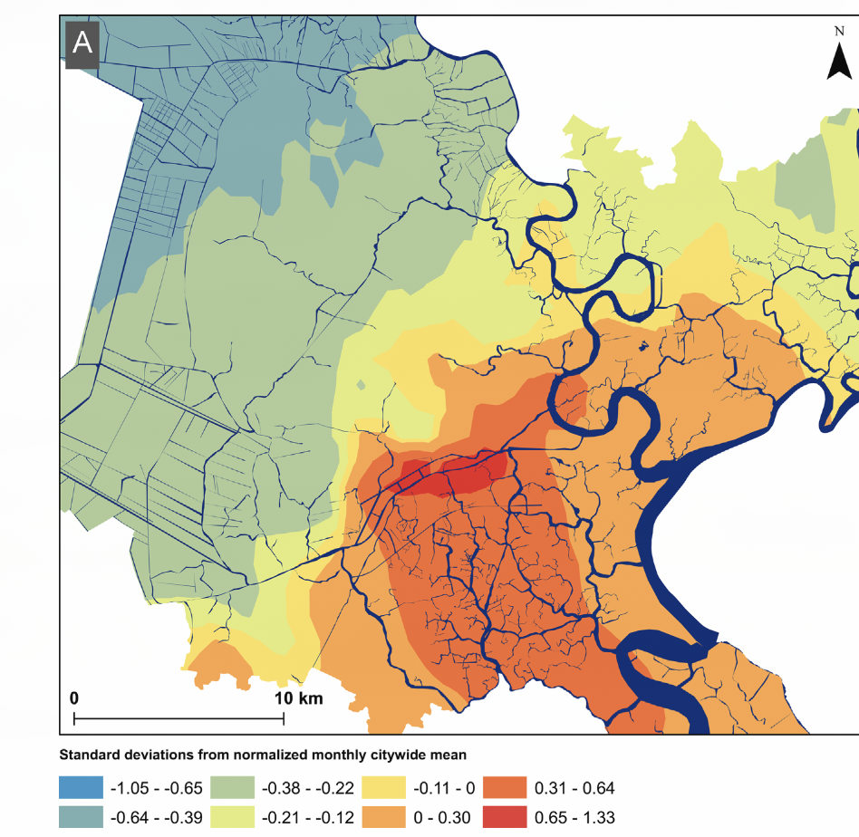
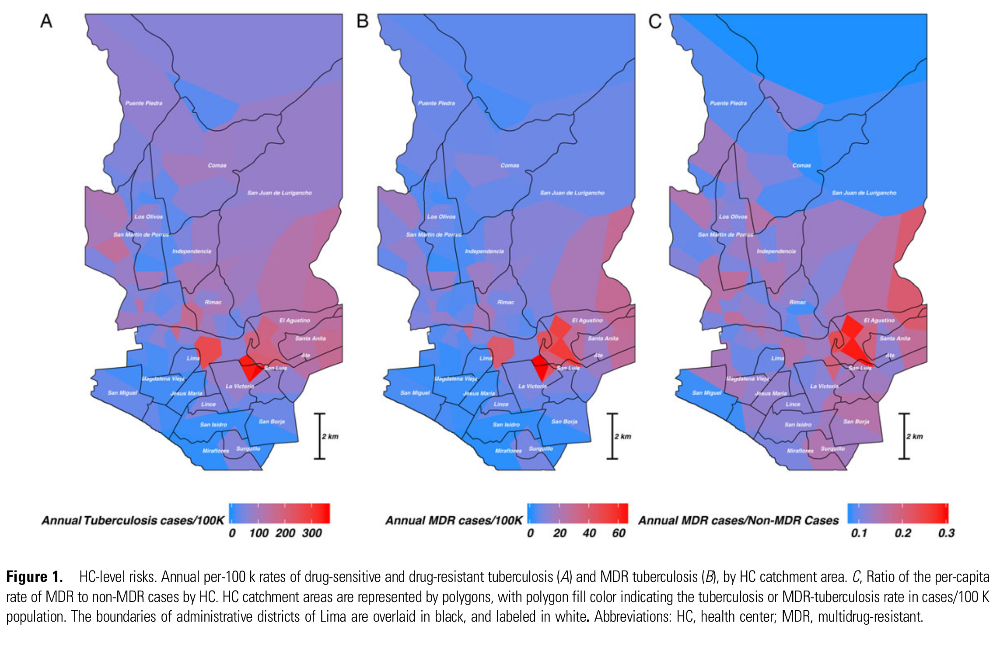

flowchart A(Decide to do spatial epidemiology) --> G(Collect spatial data) G --> D(Measure clustering and <br> other spatial descriptives) G --> F(Make descriptive maps) D --> C F --> C(Formulate spatial hypotheses) C --> H(Construct hierarchical models) H --> J(Design and target intervention) J --> K(Evaluate) K --> G
An invitation
One theme that comes up consistently when I’m teaching and talking to students and others about topics in relational epidemiology - particularly through my courses on spatial analysis - is that it has an aura of inaccessibility.
This makes a certain kind of sense: Making maps and measuring and modeling spatial relationships might seem like it is outside of the classic analytic toolkit of working epidemiologists, not to mention other fields in public health, medicine, and the social sciences. In fact, this was my take on it as well, until I realized space has always been at the heart of my research, even when I didn’t realize it!
The diagram in Figure 1 reflects my interpretation of the way someone coming to this area of research and practice for the first time might see it:
In this view, spatial epidemiology or analysis is taken to be a set of relatively fixed and well-described ideas and procedures connected to a highly technical set of methods. When we come from this perspective, starting a spatial project requires us to embark with a backpack that is already filled with specialized spatial tools.
You are (almost certainly) a relational analyst already
My goal in this short essay is to chip away a bit at the idea of spatial/relational epidemiology as something separate and apart from mainstream epidemiology and public health. Instead, I argue that these are better understood as a loose wrapper around a core set of ideas and tools that are part of the working arsenal of most professionals, students, and researchers in public health.
To explain what I mean, and why I think it’s important, I’m going to subject you to a bit of autobiography about my own intellectual and professional trajectory.
Maps: Gateway or destination?
I began working as an epidemiologist or epidemology-adjacent type as a PhD student at the University of Michigan some time around 2006. As part of my dissertation research, I worked with Joe Eisenberg on an analysis ofthe role of social networks as sources of risk and protection against diarrheal disease and other infections in a group of villages in an area of rural Ecuador:

Looking back, this was indisputably a spatial analysis: We were interested in how local social contexts impacted variation in health outcomes across a set of 20+ villages and also how within-village variation in social connectivity impacted risk within villages.
We employed multi-level data about common characteristics of individual villages, households, and the individuals within them. But at this time, I thought of myself as doing a few things, but none of them were spatial:
Infectious disease epidemiology: Why and how do people become infected with various pathogens?
Social epidemiology: How do social relationships impact disease outcomes?
Network analysis: How does the structure of relationships impact individual and community health?
As it happened, all of these things were correct. But what I didn’t really understand at the time was that the collection of these different approaches into a single analysis made it spatial or geographic in nature, even if I didn’t realize it
A process of progressive revelation
As a postdoc, working with Ted Cohen, I began analyzing data from a large study of household-level tuberculosis transmission in Lima, Peru. Figure 3 illustrates the model we developed to characterize household-level differences in transmission rates as a function of exposure type:

At the time, I knew that these households were distributed across neighborhoods of Lima, but I didn’t give it much thought. I was more interested in risks experienced by an average household. And to be honest, I didn’t know that spatial metadata were available on each of the households, since I wasn’t involved with the data collection!
In the interim, I got the chance to work on some collaborative projects with an explicitly spatial focus. In one, we reconstructed an outbreak of morbillivirus (think: measles) among a herd of migratory dolphins (Figure 4).

In another, we looked at the relationship between environmental risks, such as neighborhood-level flooding, on the rate of pediatric diarrheal disease in Ho Chi Minh City in Vietnam (Figure 5).

These were the first experiences I had explicitly looking at these outcomes as a function of geographic space. While I had previously thought that mapping and spatial analysis and health geography were big scary things I couldn’t do, I started to realize something important: These projects were not substantively very distinct from ones I had done before. The difference was that we were explicitly talking about spatial relationships and making maps (or simple one-dimensional diagrams as in Figure 4), instead of implicitly as in Figure 2 or Figure 3.
After completing these other projects, I dove back in to the Lima TB data to look at the drivers of multi-drug resistant TB (MDR-TB) risk. This was when I finally found out (some 2 years after I had started working with these data!) that spatial information on each household was available. So, with great trepidation, for the first time I made a map to explore spatial variability in MDR-TB outcomes.
And when I did this, we instantly saw that there were seemingly meaningful differences in the rate of TB overall, and MDR-TB in particular, across different health center catchment areas:

This was the moment, some 10 years after I dipped my toes into the world of infectious disease epidemiology, where I realized I had been doing spatial work all along.
So what?
Why am I bothering you with this tedious and indulgent bit of personal history? It’s because it took me way too long to recognize that spatial epidemiology was a wrapper around a set of skills and ideas I had been working with for many years before I recognized what I was doing. I was intimidated by anything preceded by ‘spatial-’: it sounded like a bunch of skills I didn’t have and couldn’t acquire.
My belated realization about the emergent quality of spatial epidemiology, and its broader connection to relational thinking in public health and the social sciences, has been crucially important for me. It made me realize that when I push into new areas - in life as much as research - that I probably have more of the tools I need than I realized in advance.
This means that you don’t need to identify as a spatial or network or time series analyst to be one. And if you want to think of yourself as one, you should, because ultimately it is the intention to engage with the spatial, social and temporal relationships that drive health outcomes that makes the difference. This is likely true for many if not most scientific subfields1, but this one is mine and I’m glad I finally realized it!
1 To be fair, you probably need to be working near-ish to a field for it to happen by chance: there is little chance of me taking on the characteristics a particle physicist or chemical engineer by chance, but I wouldn’t rule out lepidopterist or archaeologist entirely!
Influences
There are any number of books and papers out there that have articulated important perspectives on the tools of quantitative analysis of relational and contextual data. The following have been particularly important for my own thinking and their influences will be felt throughout this work:
Statistical Rethinking (mcelreath2020?)
The Ecological Detective (hilborn1997?)
ARM/Regression and Other Stories (gelman2020a?)
What makes these works so useful, strong, and enduring is the way that they articulate a coherent, opinionated perspective on the meaning and use of a set of methodological tools. On top of that, they are engaging and fun to read - the sort of thing you return to over time not just to get specific methodological tools, but to be exposed to their perspective.